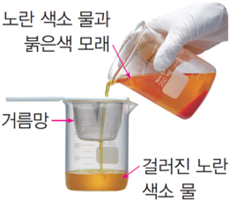

1번
다음은 노란 색소 물과 붉은색 모래를 넣고 섞어 거름망 위에 부으면서 배설 기관이 하는 일을 알아보기 위한 실험입니다.배설 기관 모형 실험에서 거름망과 걸러진 노란 색소 물이 나타내는 것으로 옳게 짝지어진 것은?

개요
거름망
걸러진 노란 색소 물
방광
노폐물을 포함한 혈액
방광
오줌(노폐물)
콩팥
오줌(노폐물)
콩팥
노폐물을 포함한 혈액
콩팥
노폐물을 걸러 낸 깨끗한 혈액